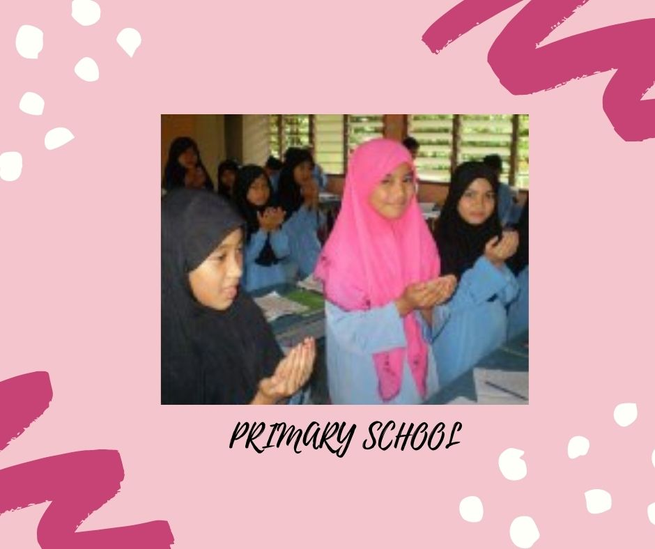
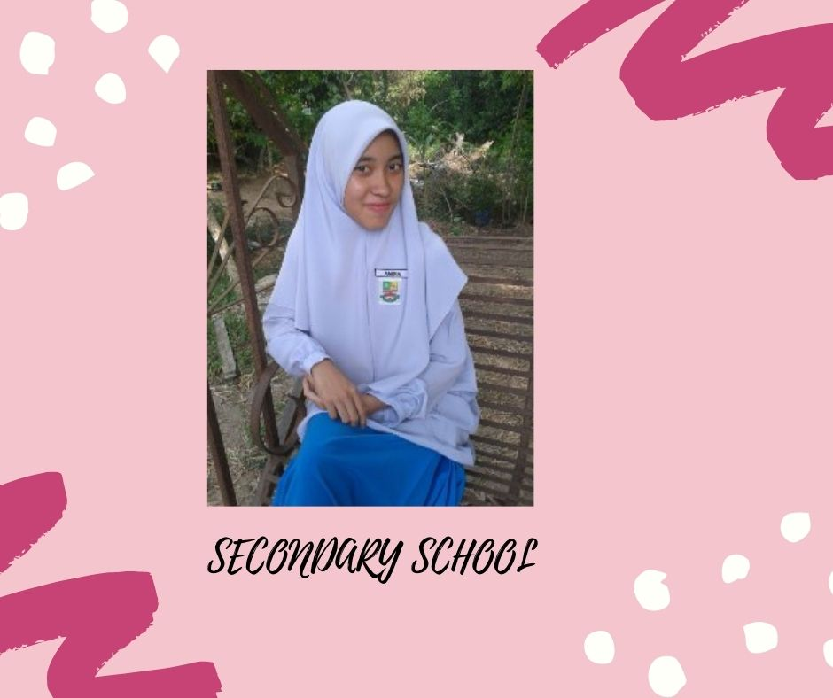
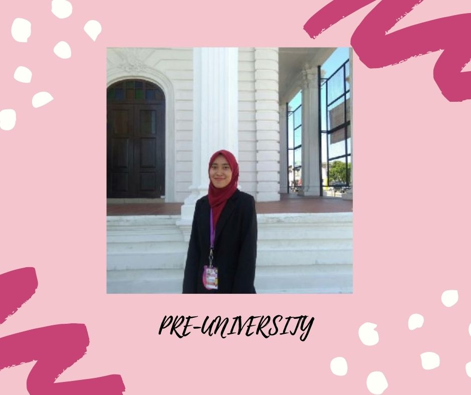
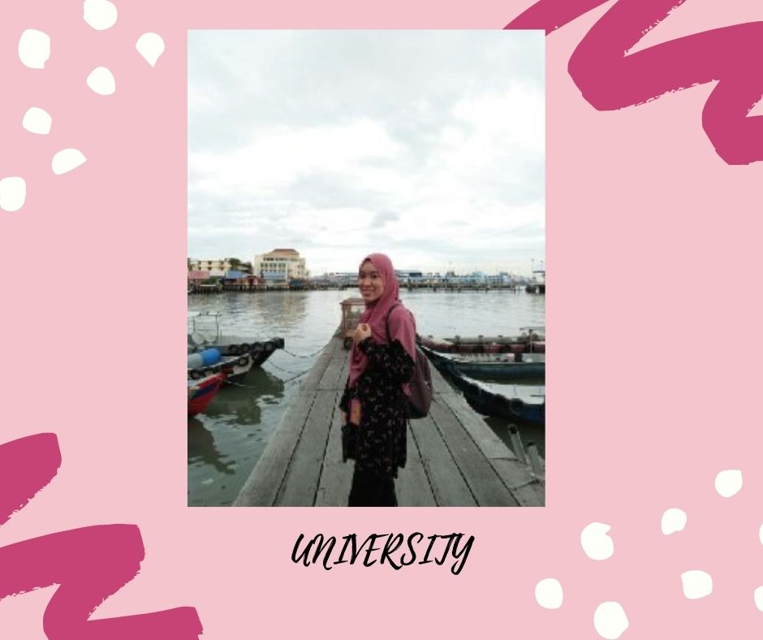

MY JOURNEY STUDY
ENJOY WITH MY JOURNEY STUDY
Primary School

Hi! This is me 10 years old in standard 4 at Sekolah Kebangsaan Kampung Baru.
When I was in primary school, I did not have many pictures to remember.
This is a picture taken by the Ustaz during a religious class.
Secondary School

This is me while in high school.
There are many happy and sad memories that I could not describe while I was studying in form 1 until finished SPM Examination.
Pre-University

This is me in Form 6.
Although only a year and a half is spent here, but too many memories and knowledge that will never be forgotten.
University

This is me now!!!